A few days ago, a friend of mine suggested using "low-rank methods" in my neural-networks-from-scratch work, to showcase how basic concepts of linear algebra play an important role in neural networks. I started digging into the topic, and while surfing the internet, I stumbled upon a comment on Reddit saying, "initialize your weights orthogonally for better stable gradients".
The idea of orthogonally initialized weights is fascinating, but I couldn't find any good explanation stating why this method works — so I decided to cook up some math myself.
To understand how orthogonal initialization helps, I started analyzing the gradient matrix. I wrote the gradient equation and broke it into three major parts like this:
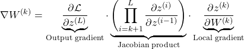
This scary-looking expression is nothing but a chain of matrix products, which helps in visualizing how gradients flow in neural networks:
What matters here is the middle product of Jacobians, because it carries the gradient signal backward through the layers.
Considering a linear layer like this:
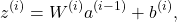
Its Jacobian will be written as:
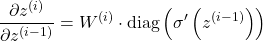
Again, a scary-looking equation, but it's just simple calculus.
Thus, the product of Jacobian matrices in the first equation can be replaced by:
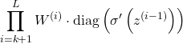
Using the submultiplicative property of matrix norms on the gradient equation:
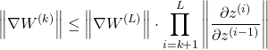
From the earlier equation, I rewrote the gradient equation by replacing the Jacobian matrix with the weight matrix like this:
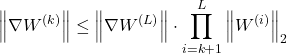
If I initialize weights with entries drawn i.i.d. from a normal distribution:
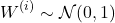
Then the spectral norm of the weight matrix will be:
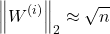
This is because:
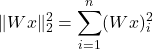
And thus we get:
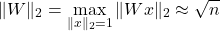
In the equation from Expressing the Gradient Equation Using Matrix Norms, the spectral norm of the weight matrix will be replaced like this:
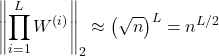
This will grow exponentially for (n > 1) and vanish quickly for (n < 1), and thus in turn affect the value of the gradient (as we proved earlier, gradient values directly depend upon the weight matrix).
If we initialize weights orthogonally by using QR decomposition on weights sampled from a normal distribution, then we know that their singular values will be 1 because:
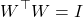
And thus, I can substitute this into the original gradient norm equations, resulting in:
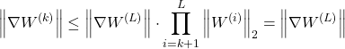
As you can see, the gradients are stable and won't explode or vanish even if we have huge depth in our neural network.
I modified my code from the last blog by increasing the layers and their widths, and initializing weights orthogonally using QR decomposition.
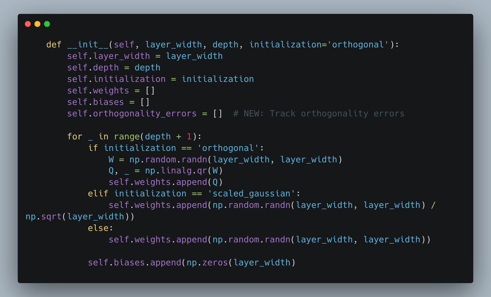
And it turns out that all the math I did till now works out (thank God!). I plotted the gradient norms vs. layer depth for Gaussian weights and orthogonal weights.
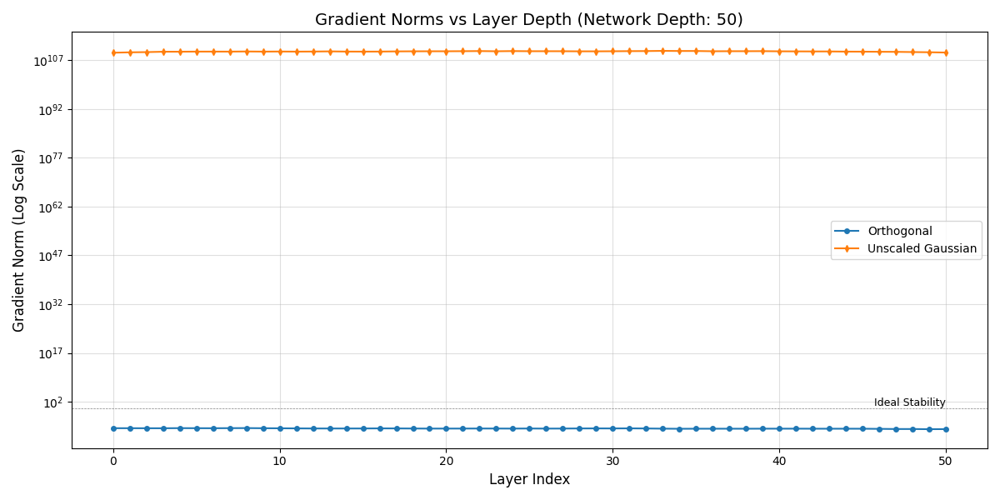
Clearly, for Gaussian-initialized weights the gradient norms explode, while for orthogonally-initialized weights the gradient norms stay within a good range.
(I generated synthetic data using np.rand for this.)
I tried to verify whether the weights stay orthogonal — or nearly orthogonal — by tracking them during backpropagation:
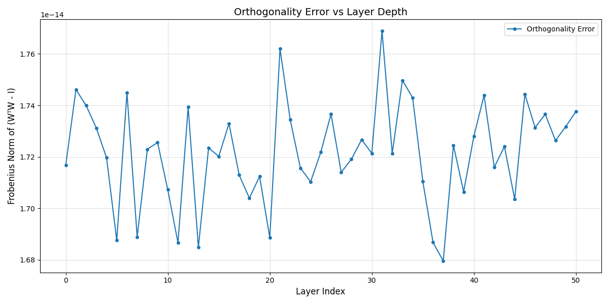
Even after working out the math and implementing everything, I still can't fully understand how the weights remain orthogonal or nearly orthogonal. Maybe a good topic for the next blog.
Hope you got some good insights from this!